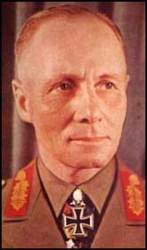
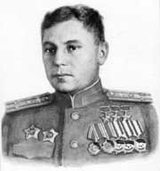
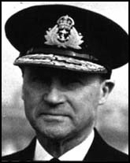
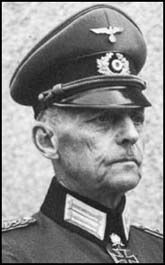
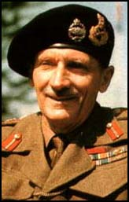

Graphics
Assets
Management
By Alexander Valencia
21 мая 2003
Лидеры это исторически известные личности фигурирующие в нашей игре.
Лидеры функционально это более продвинутые, уникальные и внешне выделяющиеся юниты. Они имеют интересные игровые специальные способности, при этом не жертвуя «реализмом». Например, Ричард Бонг всегда летает в строю с двумя ведомыми и для игрока эти три самолёта считаются одним юнитом который в три раза мощнее, разведчик Петер Черчилль умеет переодеваться во вражескую форму и внедряться в стан противника, Александр Покрышкин проделывает фигуры высшего пилотажа и способен поражать цели с более дальной дистанции. Георг Кристиансен способен брать на обордаж вражеские суда А Обычно лидеры как то будут связанны с заданиями на миссию и их смерть приводит к провалу миссии. Как правило лидеры появляются на одну-две главы, в тех операциях где они реально принимали участие.
Некоторые лидеры в части миссий предстают в виде союзных подразделений , действующих совместно с игроком, но управляющих своими юнитами самостоятельно.
Все лидеры имеют анимированные лица и активно участвуют в развитии внутримиссионного сюжета, переговариваясь с игроком короткими "асками".
Многие лидеры выступают в качестве противника в других кампаниях.
Список остальных лидеров для каждой кампании: Англия: Германия: СССР: США:
Так же в каждой кампании существует наставник игрока. 

Он обучает игрока на начальных этапах игры. Затем совместные операции. Поначалу игрок служит под его командованием, но в некоторых кампаниях в последней главе игрок может опередить основного лидера по званию и тот становится союзниым подразделением и, даже, может поступить распоряжение игрока.
Наставники, попадая на поле, могут выступать как союзные подразделения и имеють радиус воздействия на другие боевые единицы.
Наставники игрока:
Англия:
Бернард Монтгомери Германия: Гердт фон
Руншедт СССР:
Константин Рокоссовский США:
Дуглас Маккартур